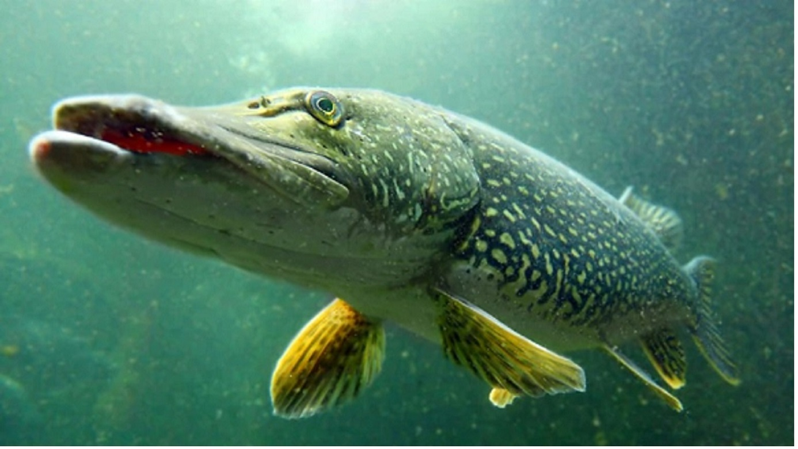
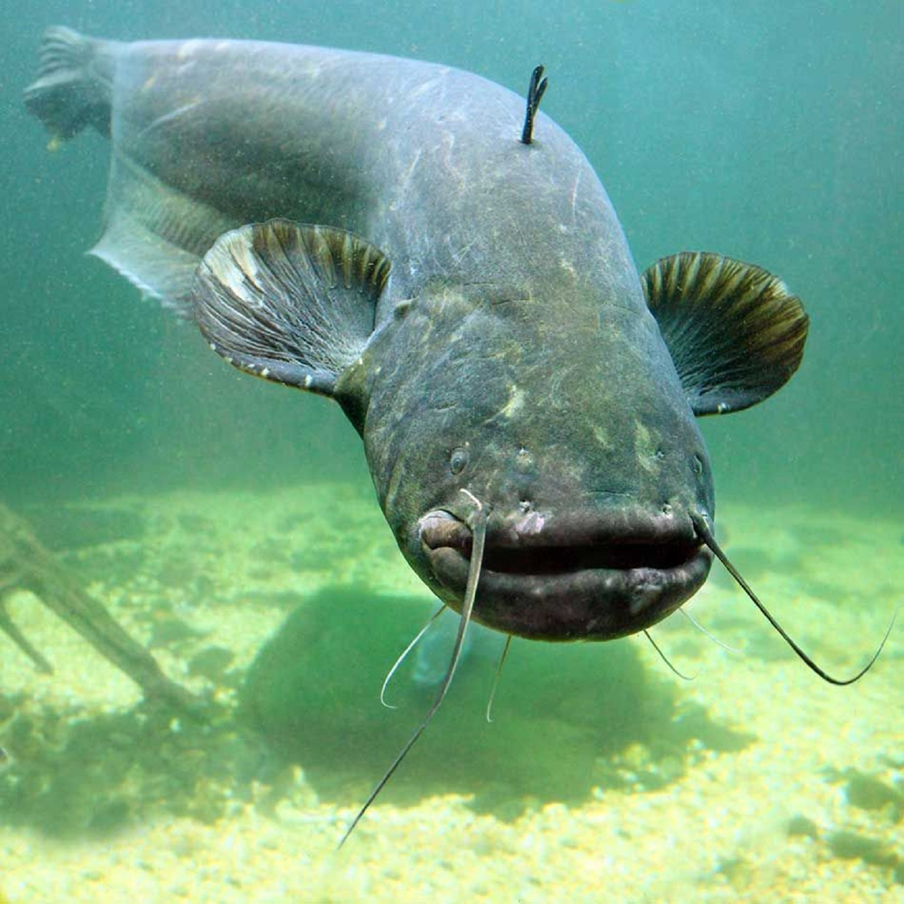
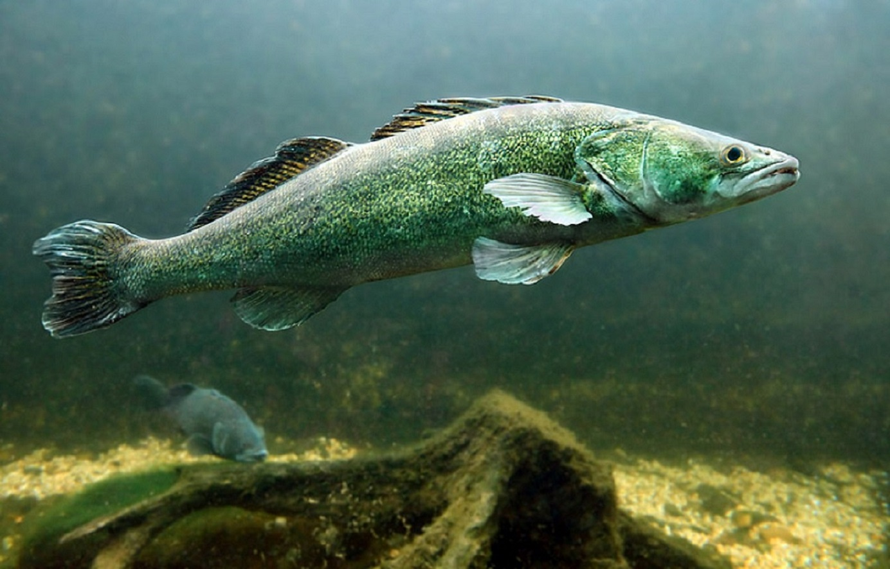
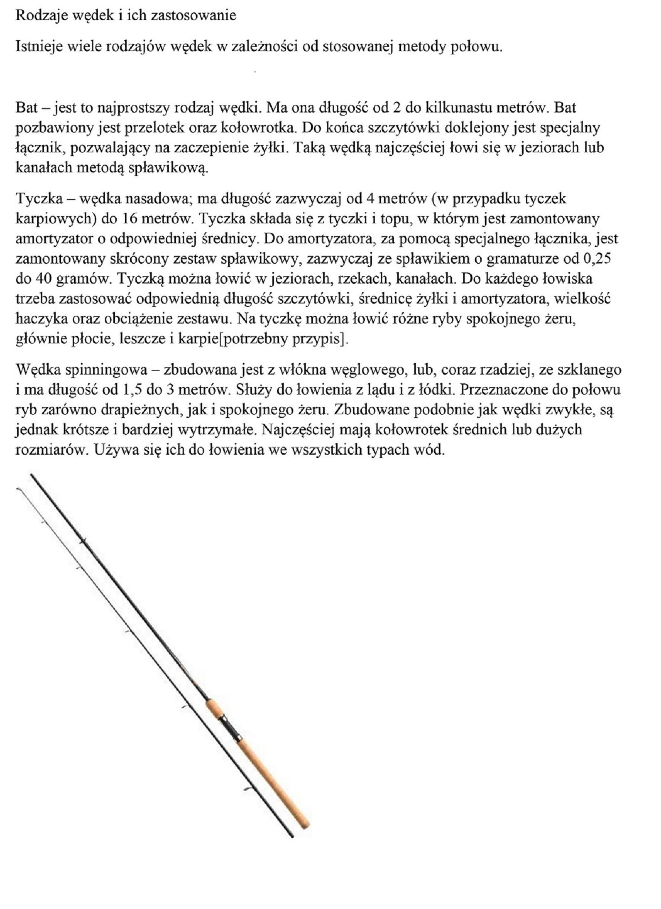
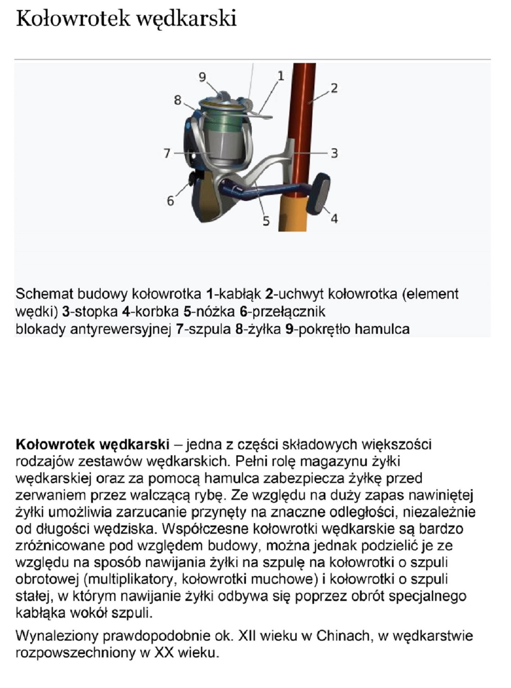
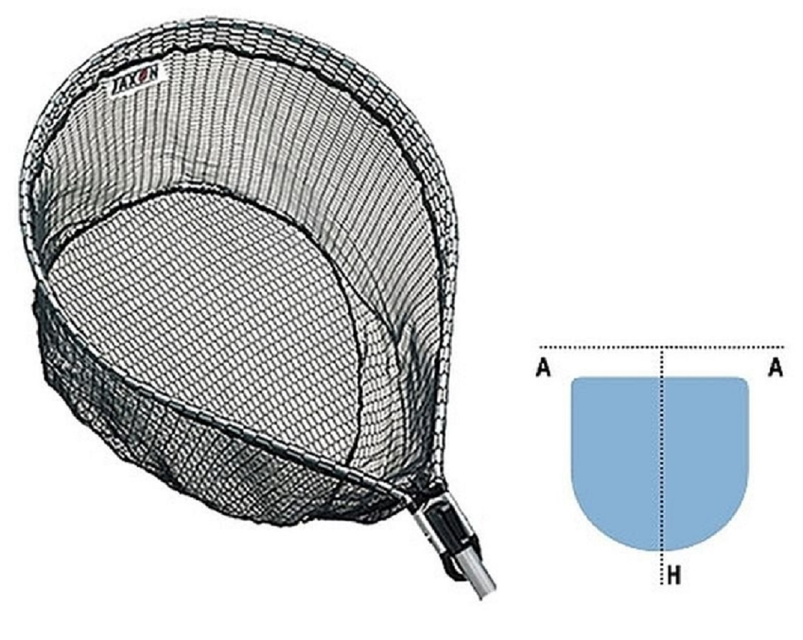
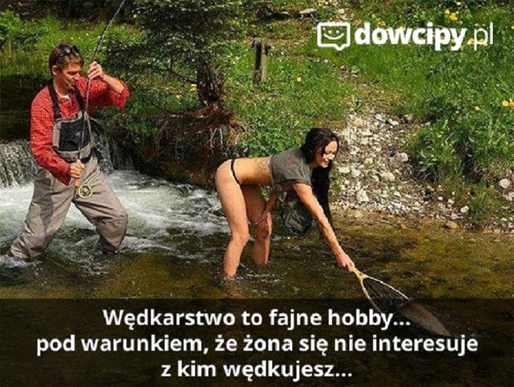
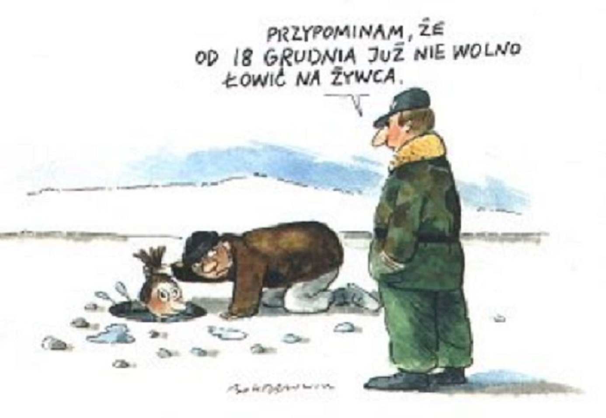

- Okazy
-
Technika wękarska
- wędkarstwo-morskie
- wędkarstwo-muchowe
- wędkarstwo-podlodowe
- wędkarstwo spinningowe
- wędkarstwo spławikowo-gruntowe
- trolling
- Sprzęt
- Łowiska
- Humor
- OFERTA
- PROMOCJA
szczupak

karp

sum

sandacz

tołpyga

wędkarstwo-morskie

wędkarstwo-muchowe

wędkarstwo-podlodowe
kij

kołowrotek

podbierak

żyłka-plecionka

Wędkarz

Żona wędkarza

Zainteresowania wędkarza

Teściowa wędkarza